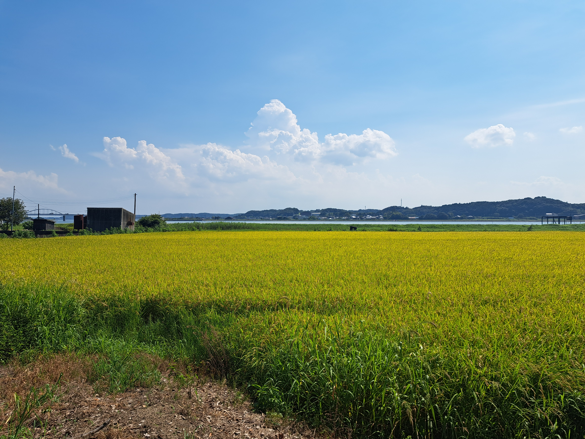

自己紹介
はじめに

中根智哉って言います。
あだ名は「ナカトモ」とか「なかねっち」ってよばれてました！
システム開発コースの一年九組です。
趣味は日頃、中学生の時にやってたソフトテニスをすることやゲーム・アニメ、漫画などを楽しんでいます。
ぜひ見て行ってくださ！！

中根智哉って言います。
あだ名は「ナカトモ」とか「なかねっち」ってよばれてました！
システム開発コースの一年九組です。
趣味は日頃、中学生の時にやってたソフトテニスをすることやゲーム・アニメ、漫画などを楽しんでいます。
ぜひ見て行ってくださ！！